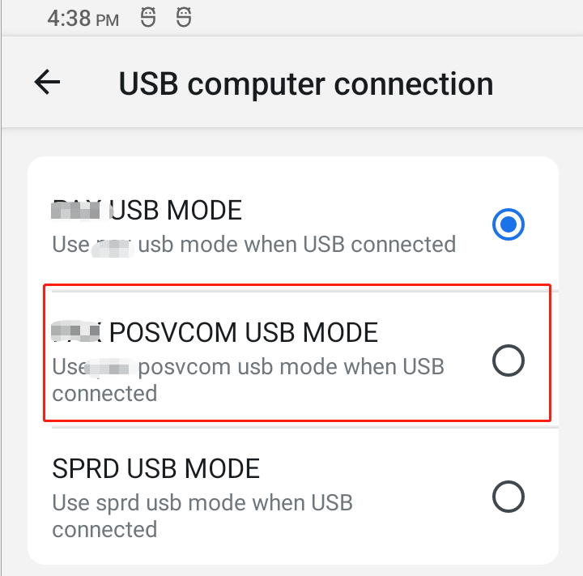

概要¶
usb 模拟tty dev,开机没有接收到usb connect状态
正常情况¶
正常选中下图标红的posvcom选项后,会insmod tty_dev.ko驱动,tty_dev驱动会注册 usb_gadget_probe_driver(&usb_dev_driver);
usb_dev_driver匹配的正确的usb后,会跑tty_dev_setup,这里不分析匹配过程
tty_dev_setup里面的 USB_REQ_SET_CONFIGURATION会调用report_posvcom_status,最终上报/devices/virtual/ttydev/ttydev CONNECTED
上层UsbDeviceManager会监听到USB UEVENT变化,弹出状态栏通知
12-13 17:28:04.385 529 1109 V UsbDeviceManager: victor_usb,USB UEVENT: {SUBSYSTEM=ttydev, SEQNUM=3827, ACTION=change, USB_STATE=CONNECTED, DEVPATH=/devices/virtual/ttydev/ttydev}

static struct usb_gadget_driver usb_dev_driver = {
#if LINUX_VERSION_CODE < KERNEL_VERSION(3,6,5)
.speed = USB_SPEED_FULL,
#else
.max_speed = USB_SPEED_HIGH,
#endif
.function = (char *)"PAX_TTY_DEV_DRIVER",
.bind = tty_dev_bind,
.unbind = tty_dev_unbind,
.setup = tty_dev_setup,
.disconnect = tty_dev_disconnect,
.suspend = tty_dev_suspend,
.resume = tty_dev_resume,
#if (LINUX_VERSION_CODE >= KERNEL_VERSION(3,12,0))
.reset = tty_dev_reset,
#endif
.driver = {
.name = "ttydev",
},
};
int report_posvcom_status(struct device *dev, int status)
{
char *disconnected[2] = { "USB_STATE=DISCONNECTED", NULL };
char *connected[2] = { "USB_STATE=CONNECTED", NULL };
char *configured[2] = { "USB_STATE=CONFIGURED", NULL };
char **status_msg[] = {disconnected, connected, configured};
if (likely(dev)) {
kobject_uevent_env(&dev->kobj,
KOBJ_CHANGE, status_msg[status]);
}else{
printk(KERN_ERR "%s [LINE:%d] dev NULL \r\n",__func__,__LINE__);
}
return 0;
}
frameworks/base/services/usb/java/com/android/server/usb/UsbDeviceManager.java
private static final String TTYDEV_STATE_MATCH ="DEVPATH=/devices/virtual/ttydev/ttydev";
// Watch for USB configuration changes
mUEventObserver = new UsbUEventObserver();
mUEventObserver.startObserving(USB_STATE_MATCH);
mUEventObserver.startObserving(ACCESSORY_START_MATCH);
mUEventObserver.startObserving(TTYDEV_STATE_MATCH);
private final class UsbUEventObserver extends UEventObserver {
@Override
public void onUEvent(UEventObserver.UEvent event) {
if (DEBUG) Slog.v(TAG, "USB UEVENT: " + event.toString());
String state = event.get("USB_STATE");
String accessory = event.get("ACCESSORY");
if (state != null) {
mHandler.updateState(state);
} else if ("GETPROTOCOL".equals(accessory)) {
if (DEBUG) Slog.d(TAG, "got accessory get protocol");
long elapsedRealtime = SystemClock.elapsedRealtime();
mHandler.setAccessoryUEventTime(elapsedRealtime);
resetAccessoryHandshakeTimeoutHandler();
} else if ("SENDSTRING".equals(accessory)) {
if (DEBUG) Slog.d(TAG, "got accessory send string");
mHandler.sendEmptyMessage(MSG_INCREASE_SENDSTRING_COUNT);
resetAccessoryHandshakeTimeoutHandler();
} else if ("START".equals(accessory)) {
if (DEBUG) Slog.d(TAG, "got accessory start");
mHandler.removeMessages(MSG_ACCESSORY_HANDSHAKE_TIMEOUT);
mHandler.setStartAccessoryTrue();
startAccessoryMode();
}
}
}
不弹出通知¶
打开tty的log可以看到, 插入usb,正常的启动,android很早就insmod tty的驱动了,所以内核大概10s的时候,就发了ttydev CONNECTED通知.
所以java层还没注册监听,导致一直错误接受connected信息
tty_dev_setup go in,line=1386,USB_REQ_SET_CONFIGURATION schedule_delayed_work begin,
12-13 15:44:30.832 663 734 D ENGPC: : [tid:0]parse_event: event { 'change', '/devices/virtual/ttydev/ttydev', 'ttydev', 'CONNECTED' }
解决方法¶
延时35s发送
if(first_connect_tty == 0){
first_connect_tty = 1;
schedule_delayed_work(&tdev->work, msecs_to_jiffies(35000));
}else{
schedule_delayed_work(&tdev->work, 0);
}